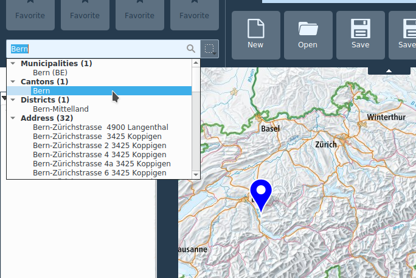

Interface de KADAS

L’interface de KADAS est divisée en cinq zones distinctes :
- Menu de fonction
- Favoris et recherche
- Affichage de la carte
- Couches et catalogue de géodonnées
- Barre d’état
Menu de fonction
On peut alterner entre diverses barres d’outils dans le menu de fonction grâce à la liste de menu. Les barres d’outils contiennent des touches pour les diverses fonctions. Les fonctions sont documentées dans un chapitre séparé :
Favoris et recherche
Favoris
On peut placer sur les quatre indicateurs de position les fonctions favorites du menu de fonction. Cela se fait en cliquant et en tirant la souris simultanément. Le favori peut être ôté par un clic droit de la souris. Les favoris sont sauvegardés comme réglages d’utilisateur.
Recherche
Le champ de recherche offre une interface commune pour les différents services de recherche :
- Coordonnées (LV03, LV95, DD, DM, DMS, UTM, MGRS)
- Localités et adresses dans toute la Suisse
- Localités au niveau international
- Attributs des données locales
- Attributs des données à distance (services web)
- Attributs des punaises
Après avoir entré au moins trois lettres, la recherche commence et les premiers résultats sont affichés.
Les résultats sont listés dans des catégories indiquées en conséquence. La liste des résultats peut être parcourue via la souris ou le clavier. Quand on sélectionne un résultat avec les flèches, une punaise bleue est placée au lieu correspondant. Si on active un résultat avec la souris, l’extrait de carte est centré sur le lieu correspondant.

À droite du champ de recherche, il est possible de définir un filtre pour la recherche de données locales ou à distance. Ce filtre ne s’applique pas aux recherches de coordonnées, de localités ou de punaises.
Affichage de la carte
Cette zone centrale de KADAS affiche les couches chargées et permet d'effectuer diverses opérations sur la carte.
La navigation au sein de la carte s’effectue via le bouton central ou gauche de la souris, le zoom via la roulette ou avec le bouton zoom en haut à droite de la fenêtre de la carte. Le bouton droit de la souris ouvre le menu contextuel. Les moniteurs à écran tactile reconnaissent les gestes pan et rotation. De plus, il est possible de zoomer sur une partie déterminée en dessinant un rectangle: pour cela, maintenir la touche SHIFT enfoncée.
Indépendamment des outils de carte actifs, le bouton central et la roulette de la souris servent toujours à la navigation dans la carte. La fonction du bouton gauche et droit de la souris dépend de l’outil actif.
Le contenu de la carte est contrôlé par la légende de la carte, décrite dans la section suivante.
Dans le tab Vue, des vues de carte supplémentaires peuvent être ajoutées. Ces vues supplémentaires sont passives, ce qui signifie qu'aucune autre interaction que la navigation et le zoom est possible.
Couches et catalogue de géodonnées
Sur le bord gauche de la fenêtre de programme se trouve une zone rabattable qui contient les fonctions d’administration des niveaux de cartes. La partie supérieure contient les légendes des cartes et la partie inférieure le catalogue des géodonnées.
Couches
La zone de légende de la carte énumère toutes les couches du projet. La case à cocher de chaque rubrique de la légende peut être utilisée pour afficher ou cacher la couche.
Une couche peut être sélectionnée et glissée vers le haut ou le bas dans la légende pour modifier l’ordre d’empilement des couches. Une couche se situant au sommet de la liste de cette légende sera affichée au-dessus de celles qui se situent plus bas dans la liste.
Les couches dans la fenêtre des légendes peuvent être organisées en groupes.
Pour retirer une couche d’un groupe, il suffit de pointer votre curseur sur elle, de la glisser-déposer en dehors ou de faire un clic droit et de choisir Mettre l’objet au-dessus. Un groupe peut contenir d’autres groupes.
La case à cocher d’un groupe permet d’afficher ou de cacher toutes les couches du groupe en un seul clic.
En cliquant avec le bouton droit sur une entrée, différentes opérations peuvent être effectuées, selon le type de la couche sélectionnée, par exemple :
- Zoom sur la couche
- Enlever Renommer
- Ouvrir les propriétés de la couche
Il est possible de sélectionner plus d’une couche ou d’un groupe à la fois en tenant appuyée la touche Ctrl pendant que vous sélectionnez les couches avec le bouton gauche de la souris.
Catalogue de géodonnées
D’autres niveaux de cartes peuvent être ajoutés à la carte dans le catalogue de géodonnées. Si la liste est vide, il n’y a pas de raccordement par réseau avec le service de catalogue.
Au lancement du programme, seules les données publiques sont affichées. En fonction de l’utilisateur, d’autres données pourront être mises à disposition après authentification, voir Authentification SAML ci-dessous.
La saisie de termes de recherche dans le champ de texte limite en conséquence les niveaux disponibles. Un niveau peut être ajouté au moyen du menu contextuel (clic droit sur l’indication du niveau) ou par “glisser-déposer” sur la carte.
Les fonctions suivantes sont à disposition en haut de la liste de catalogue :
- Ajouter base de données locale : On peut ajouter des données de vecteur, raster out CSV à la carte.
- Adjouter une couche à partire d'un service Web: On peut adjouter des données WMS, WFS et WCS.
- Recharger le catalogue : Recharge la liste des niveaux de carte disponibles.
- Authentification SAML : Une fenêtre est ouverte où l’on peut effectuer un enregistrement par Internet sur le serveur. Après la réussite de l’enregistrement, le catalogue de géodonnées est rechargé et d’autres niveaux de cartes sont disponibles selon les autorisations.
Barre d’état
Les indications et les éléments de commande suivants sont énumérés dans la barre d’état :
- GPS: La fonction de la touche GPS est décrite dans le chapitre Navigation.
- Position de la souris: La position actuelle de la souris peut être affichée dans différents systèmes de coordonnées. Le système d’affichage souhaité peut être choisi par la touche à droite de l’indication de la position.
- Échelle: À droite de ces coordonnées se trouve l’échelle de la carte_. Si vous zoomez ou dé-zoomez, l’échelle se met à jour automatiquement. Une liste déroulante vous permet de choisir une échelle prédéterminée allant du 1:500ème au 1:1000000ème.
- Système de coordonnées: Le système de référence où la carte actuelle doit être représentée peut être choisi dans le champ de sélection du système de coordonnées. Le système de référence affiché peut différer du système de référence dans lequel les données existent. Dans ce cas, les données sont converties pour la représentation.